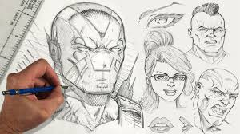

Ever since I was six years old, I've been drawing characters and comics. I think it was then that I already knew what it was i wanted to be. My love for comics and characters only rose with my introduction to cartoons, games, anime, and all other sorts of media. I loved anime so learning that it comes from comics called "manga" inspired me to no end, and ever since it's been my dream and number one goal in life to create my own manga for people like me to enjoy.
Quarantine marked a huge turning point in my life, but the way it changed things in relevance to my motivation. After meeting more friends who share the same passion as me I finally started developing my own manga in 7th grade, titled "Manicore". It's been through it's ups and downs, motivation has wavered, but im still developing it to this day, making sure its a powerful enough story, and that im skilled enough as an artist, to push it out in the world and hopefully make my dream come true.